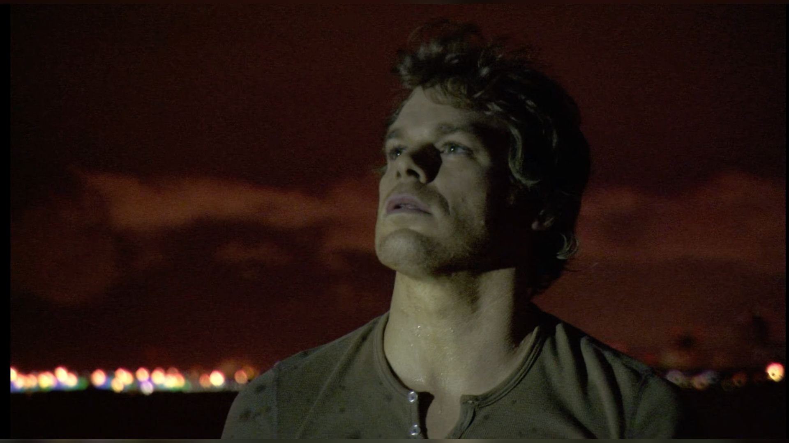
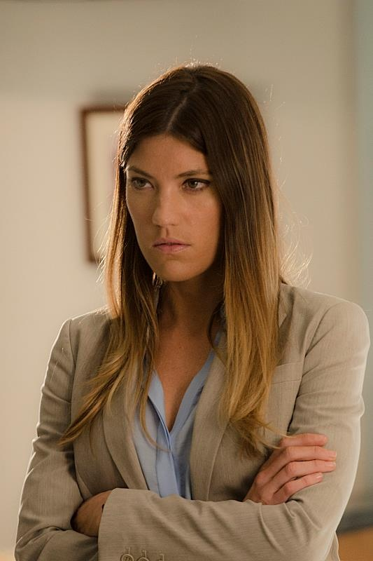
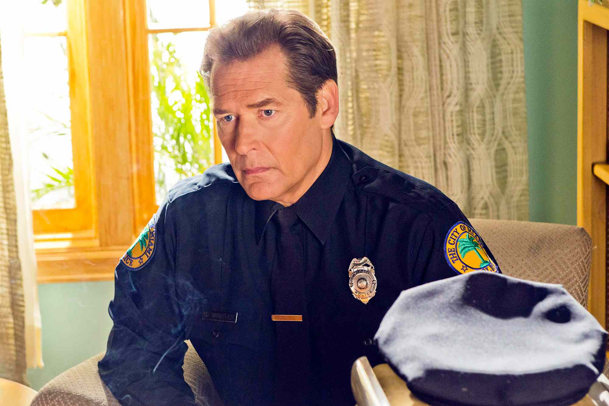
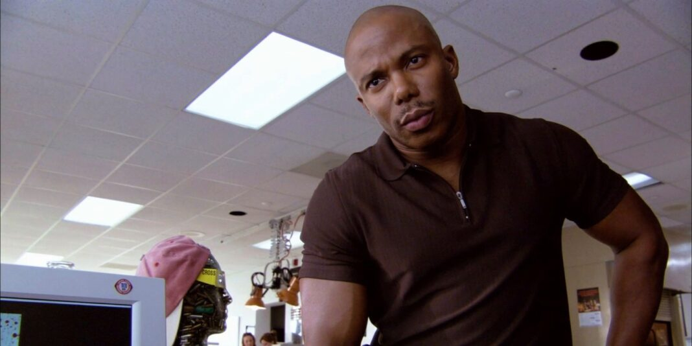

Dexter Morgan nasceu em Miami, Flórida, Estados Unidos, em 1971. No início da história, Dexter se lembra de muito pouco sobre sua vida antes de ser adotado por Harry e Doris Morgan. Harry só conta a Dexter que seus pais biológicos morreram em um acidente de carro, e Harry o trouxe para casa da cena do crime. Harry e Doris têm uma filha biológica, Debra ("Deborah" nos romances) Morgan, que se torna irmã adotiva de Dexter.
Quando Dexter tem sete anos, Harry descobre que o rapaz tem matado animais de estimação do bairro e percebe que Dexter é um psicopata com uma necessidade inata de matar. Consequentemente, Harry decide canalizar os impulsos homicidas do rapaz em uma direção "positiva", ensinando-o a ser um assassino cuidadoso e meticuloso de pessoas que "merecem" — assassinos que escaparam da justiça. Doris morreu quando Dexter tinha 16 anos, e Harry morreu quando Dexter tinha 20. Na segunda temporada, o inimigo de Dexter, o sargento James Doakes, descobre que Dexter abandonou a carreira na medicina para seguir análise de respingos de sangue, apesar de estar no topo da turma na faculdade de medicina. Ele também observa que Dexter estudou Jiu-Jitsu avançado e era faixa preta na faculdade.

Debra Morgan, filha de Doris e Harry Morgan que nasceu em 7 de dezembro de 1979. Ela é irmã de Dexter Morgan, que Harry adotou legalmente após inicialmente acolher Dexter logo após resgatá-lo da cena do assassinato de sua mãe quando ele tinha três anos, vários anos antes do nascimento de Debra. Mulher corajosa, de boca suja, ela ansiava pela atenção do pai e invejava Dexter pelo tempo que Harry passava com ele, sem saber que Harry o treinava para ser um serial killer vigilante.

Harry era o pai adotivo de Dexter Morgan, que lhe ensinou o Código de Harry, o que lhe permitiu viver livremente como serial killer. Mais de dez anos antes da primeira temporada, Harry morreu por suicídio, disfarçado como insuficiência cardíaca. Depois de pegar Dexter desmembrando um homem, ele tirou a própria vida.

James Doakes possui o posto de sargento detetive e aparece nas duas primeiras temporadas da série. Ele é o primeiro membro da Divisão de Homicídios da Área Metropolitana de Miami a suspeitar e descobrir que Dexter Morgan é secretamente o serial killer apelidado de "Açougueiro de Bay Harbor". Os esforços de Dexter para evitar e sabotar a investigação de Doakes servem como uma trama central na segunda temporada.